讲座 2
- 欢迎!
- 内存
- Arrays
- 链表
- 指针
- 二分搜索 Trees
- Balanced Trees
- 哈希表
- Collisions
- Tries
- Abstract Data Types
- Dictionaries
- Queues
- Stacks
- Summing Up
欢迎!
- In our 上一页 session, we focused entirely on 算法: searching for things, sorting things, and generally solving problems. But we took for granted that we could store all of those things somehow in the computer’s 内存 without really considering how.
- Today is entirely 关于 designing 数据结构. We are going to take a look underneath the hood, so to speak, of a computer and consider how it actually stores data.
- We will explore how to 更多 cleverly store data of interest so as to facilitate those 算法 performing even better than they might if we used a 更多 simple layout inside.
- By the end of this 讲座, you will understand arrays, 链表, trees, 哈希表, tries, and abstract data types like dictionaries, queues, and stacks.
内存
-
Inside of your computer or really your electronic device of most any 排序 is a chip that looks like this. This is a stick of 内存 or RAM, random access 内存.
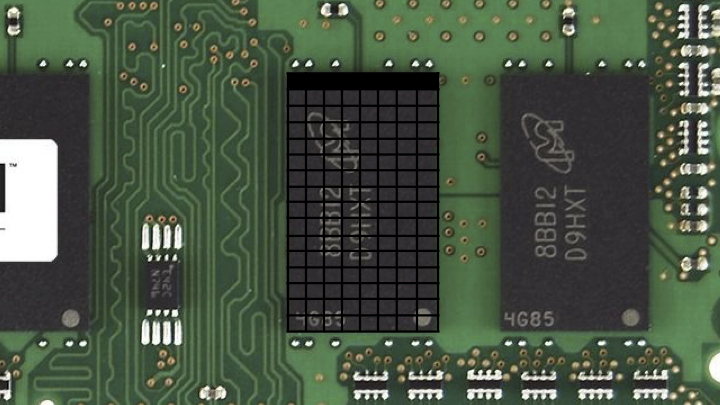
- This might store millions of bytes, even billions of bytes, also known as megabytes or gigabytes, respectively. If we focus on just one of these black chips, you could imagine zooming in on this and looking virtually inside.
- Inside of this chip is all of these bytes. And if there’s a whole bunch of bytes, it stands to reason that we could arbitrarily number them. Maybe this here at top left is the first byte, this is the second byte, the third byte, and if it’s a gigabyte of 内存, this might be the billionth byte, give or take, not drawn to scale.
- You can think of the bytes that can be stored inside of your computer’s 内存 akin to postal addresses. For instance, we might visit 45 Quincy Street, Cambridge, Massachusetts, 02138 USA, and that would lead us very specifically to Memorial Hall, the building in which Sanders Theater at 哈佛大学 lives.
- Similarly, digitally, if we wanted to store a byte at a very specific 地点 in 内存, we could send it to byte one or two or one billion. And to be fair, computers typically start counting at zero. So it might really be byte zero and one and two.
- We don’t have to use just individual bytes. Recall that one byte is eight bits, and the highest you can count with eight bits was 255, assuming positive numbers and zero alone. That’s because with eight bits, you can represent 256 total possibilities, but if you start counting at zero, you can only go as high as 255.
- We might want to use 更多 than one byte. For instance, we might want to use four bytes or even eight bytes to count even higher or to store bigger amounts of data.
- You can think of this grid of 内存 as a canvas, similar in spirit to what an image is with rows and columns of pixels. Inside of this chip, there’s no notion of rows and columns. This is just an artist’s rendition of all of the bytes therein. But it is nice in the sense that it’s this canvas that we can use to paint a picture of all of the data that we want to store inside of that computer.
- A data structure is a way of structuring your data inside of the computer’s 内存.
Arrays
- The simplest data structure is called an array. An array is a block of 返回-to-返回 内存 in which you can store your data.
-
Here is a grid of just three bytes of 内存. If we want to store, for the sake of 讨论, the numbers one, two, and three, we can use three of those bytes inside of the computer’s 内存 using an array to store them 返回 to 返回 to 返回.
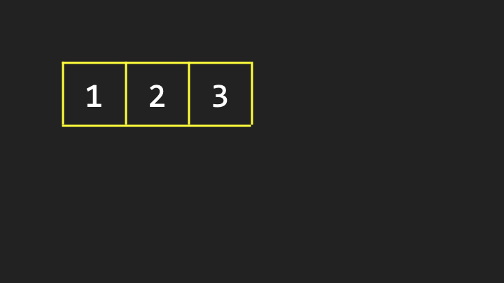
- This is in contrast to putting the one over here, the two over there, the three over there. What’s nice 关于 an array is by design, the values are stored 返回 to 返回 to 返回 so that you know that the second value is one byte away from the first, and you know that the third value is two bytes away from the first.
- Suppose that for whatever purpose we want to store a fourth value inside of the computer’s 内存. Maybe these numbers represent phone numbers or names or some other value, and it stands to reason that eventually you might want to add a fourth one.
- It’s pretty obvious that according to this story, if we’re using an array, that fourth value should go right after the third. But the catch is that these three values do not live in a vacuum inside of the computer. There might be data all around them.
-
Consider that inside of a computer program, the words “你好, 世界” might be stored, because maybe someone typed that into the keyboard. It stands to reason that inside of the computer’s 内存 at any given 时间, there might be numbers and letters and colors and 视频 and any number of other things.
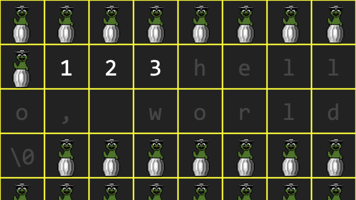
Notice how Oscar the Grouch represents so-called garbage values, remnants of the program having used that 内存 before or the 内存 not having been cleared. - We don’t necessarily know that there’s going to be available space where we want to put that fourth value. If previously I simply asked the computer for space for three numbers, it gave me space for one, two, three numbers. And if I asked the computer for room for a sequence of characters, it knew I had already been given one, two, three values, so why not put “你好, 世界” right after that?
- That seems to be a very clean design. Unfortunately, it didn’t anticipate my necessarily needing a fourth value. So I’ve painted myself into the proverbial corner.
- Where can I put this fourth value? Well, the value of these garbage values is that technically I can use any of them because if they’re just garbage, I can repurpose them. So if there are four garbage values in a row elsewhere, I could copy the one to that first 地点, the two to the second, the three to the third, and now I can put the fourth value into that fourth 地点.
- I don’t need that original array anymore, so I can give that 内存 返回 to the operating system and allow it to be reused eventually for other purposes.
- That is an array: a block of contiguous 内存, that is values 返回 to 返回 to 返回. But that’s a key defining characteristic. No matter how many values you want to store in an array, you must keep them together according to that definition.
- If you want to grow the array and there is not space available for that additional value, you’re going to have to relocate the array altogether. And even though copying the one, the two, the three, and then adding the four seems quick, that took work. It took three steps plus the fourth step to add the four. That’s a good amount of work just to add one value. I had to copy the entire array.
链表
- Could we maybe do better than that? It turns out you can using this very same canvas of computer 内存 if we think a little harder 关于 how to treat all of those individual bytes. The second data structure we’ll talk 关于 now is a so-called linked list, which is an alternative to an array.
- As is too commonly the case in 计算机科学 and technology 更多 generally, there’s going to be trade-offs. We’re going to have some advantages here, but potentially some disadvantages as well.
-
Let me propose again that I’d like to store the value 1 initially. But for now, I’m also going to reveal that indeed each of these locations in 内存 have addresses.
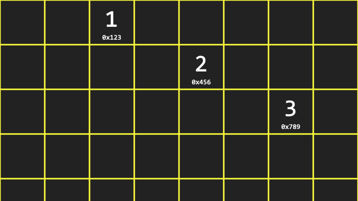
Notice that the value 1 is at 地点 0x123, the value 2 is at 地点 0x456, and the value 3 is at 地点 0x789. The “0x” indicates hexadecimal notation, which is conventional when talking 关于 computer 内存 addresses. - Unlike an array, it is not the case that the second value is one byte away from the first value. According to this picture, it would seem to be many bytes away, which is arbitrary and not necessarily predictable. It just so happened that, too, we had room for the values right there.
指针
- If this is just a canvas of 内存 in which I can store bytes, and bytes in turn can be thought of as numbers, maybe I could use a few 更多 of these bytes to stitch together these values in 内存. Or if you prefer metaphorically, maybe to leave some breadcrumbs that lead from one value to the 下一页 to the 下一页.
-
For each of these three values, we use one additional byte for what we’re going to call metadata, just to keep track of where the 下一页 value is.
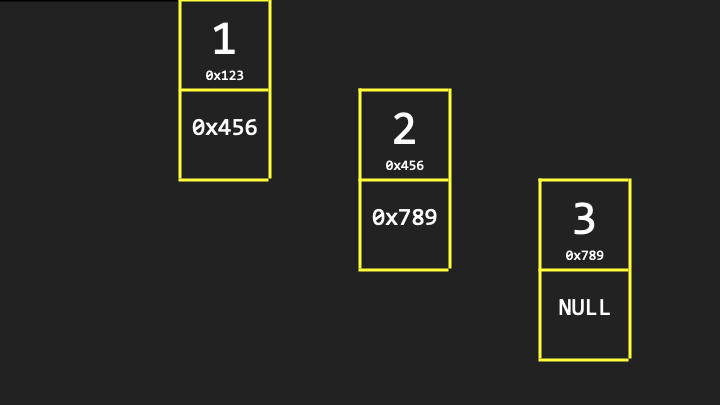
Notice that each node contains two bytes: one piece of data that we care 关于 (the actual number like 1), and one piece of metadata (the address of the 下一页 node in 内存, like 0x456). - A pointer is indeed how programmers refer to these values insofar as they’re pointing from one 地点 to another.
- As for the second byte in the last node, technically we don’t really need it because there’s no fourth value yet. But to keep this data structure standardized such that each of these chunks of 内存 are the same, we should at least allocate that second byte even if we don’t plan to use it. By convention, we’re just going to make it all zeros, which we’ll represent with the value 0x0 or null. It’s a terminus in that path. That’s it. There’s no 更多 values in this list.
-
It’s conventional to abstract the specific addresses away and simply indicate that this linked list has an address that is the address of the very first byte. At the end of the day, all we really care 关于 is that we’ve constructed a list of values, irrespective of the specific and uninteresting addresses at which those values live.
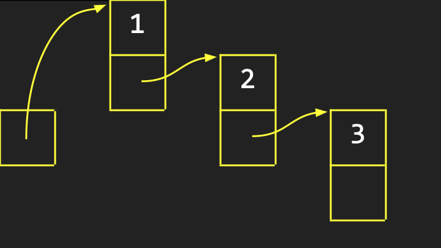
Notice how we draw it with arrows pointing from one value to another to indicate visually that this is a linked list of values, each of which we conventionally call a node. - What’s the upside here? Among the advantages of 链表 is that we’re no longer bound by the simple but nonetheless constraint of arrays whereby your values must be, by definition, 返回 to 返回 in 内存. That was limiting insofar as there might not be available space right 下一页 to the array in 内存.
- In the 世界 of 链表, if you wanted to insert the number four, you could plop it anywhere. It doesn’t really matter because you could pictorially draw another arrow from the three to that new value. Or 更多 specifically, you could change that null byte, 0x0, to be simply the address of that fourth additional value wherever it is in 内存.
- 链表 offer this dynamism where you can grow them, and you could even shrink them, without having to impact all of the existing values by copying them from one place to another.
- But there might very well be a downside. That again is thematic in computing, such that any 时间 you get a win, you’re going to have to take a loss somewhere else. There’s going to be a trade-off that often involves 时间 or space.
-
Consider what the efficiency is of inserting a new value into a linked list. Here is the beginning of a linked list, and it’s initially empty because it’s not pointing at or storing the address of any actual nodes of value.
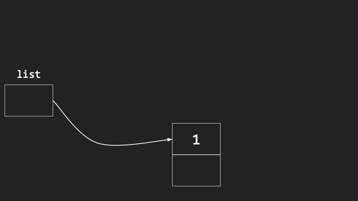
-
The simplest way to insert a new value into this list is to just squeeze it into the beginning. We could put the first value there. We could then put a second value right before it.
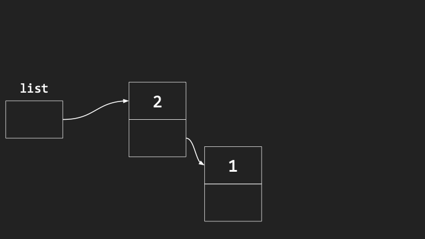
-
Notice the one has not moved. We’ve just added the two wherever we can, and updated the arrows.
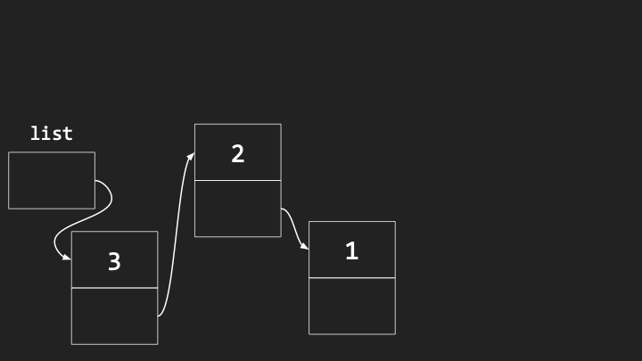
- Notice what has happened. If we care 关于 maintaining these elements in sorted order, say in increasing order (one, two, three), we’ve accidentally built this linked list in reverse order by prepending.
- However, it’s pretty darn efficient to do the insertion itself. All we have to do to insert a new node is find some space for it, point it at the existing list, and then point this box at the new node. That’s going to take what? Three steps, give or take. But that’s constant 时间, which is generally good because it doesn’t matter how many nodes are already in the list.
- The downside is that they’re ending up in some random, and in this case, reverse order because we’re not inserting them deliberately in sorted order.
- What if we insert nodes at the end of the list to maintain sorted order? The running 时间 of that algorithm is actually going to be worse. Because to find the end of the list, I have to traverse the list, traverse the list, traverse the list every 时间 I insert a new node. That would be \(O(n)\), linear 时间.
- Moreover, with a linked list, if you wanted to 搜索 for some value, you can’t use 二分搜索, whereby you go to the middle and then the middle of the middle. Even though you and I have this bird’s-eye view and can ballpark where the middle is, you don’t know how to get to the middle unless you start at the beginning of the list and count all of the elements therein.
二分搜索 Trees
- Can we 搜索 更多 effectively and gain 返回 the speed of 二分搜索, whereby we were able to divide and conquer the problem in half and half and half? We can if we take yet another approach to our computer’s 内存 and treat that canvas as though we can build trees on it.
- A 二分搜索 tree is like a family tree. But instead of having members of your family drawn in the computer’s 内存, you just have values, but in a particular order.
- Let me propose that we’re storing initially seven values in an array: 1, 2, 3, 4, 5, 6, 7. When you have these values 返回 to 返回 to 返回, you can very easily jump to the middle element because if you know the index of the first element and you know the length of the array, you can literally subtract one from the other, divide by two, round appropriately, and boom, you can find the middle element.
- This is what we mean by random access: you can jump in constant 时间 to any specific address in 内存, thus RAM, random access 内存. Arrays really thrive in that environment. You don’t have to start at the beginning to find the end.
- Can we gain that efficiency but still give ourselves the dynamism of 链表 where we can grow and shrink by just using any available 内存 without having to move things constantly around?
-
Let me propose that we think 关于 this array not in one dimension, but maybe two, adding some verticality.
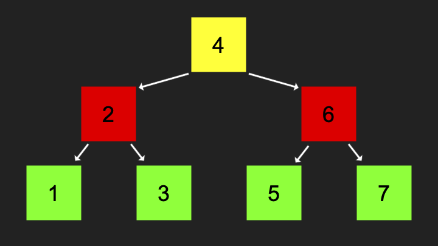
Notice that for every element, which element is smaller than it (left child) and which element is larger than it (right child). That’s the key definition of a 二分搜索 tree. - For any node you look at, its left child, so to speak, borrowing the family tree metaphor, is going to be 较少 than it, and its right child is going to be greater than it. And that’s true of the subtrees. For instance, relative to the number 4, not only is the left child smaller, but the left subtree is smaller. Every element to the left of 4 will be smaller. Every number to the right of the 4 is going to be larger than the four.
- Each of these nodes can be thought of as taking up three bytes: one for the data you care 关于 (the actual number like four), one for the address of the pointer to the left child, and one for the address of the pointer to the right child.
- What’s the value of designing this tree in this way? So long as this 二分搜索 tree is ultimately defined by its root, the topmost element, 观看 how many steps it takes to find any number. Suppose I’m searching for the number one.
- If the computer starts searching at the root of this 二分搜索 tree, it’s going to see the number four. It can ask itself: is the number I’m looking for 较少 than or greater than or equal to the number I’m looking at? One is obviously 较少 than four, so the computer can 搜索 down this way.
- Notice we have not looked at the elements on the right side. We’ve divided and conquered this problem by chopping the tree in half and half and half. When I go left, it’s like snipping the tree there and not caring 关于 anything in that direction.
- The running 时间 now of this algorithm is \(O(\log n)\), technically log base 2 of n, because we’re effectively dividing the problem again and again in half.
- What’s the trade-off? I’m saving 时间, but I’m losing space. This tree takes even 更多 内存 than the 数据结构 we’ve seen thus far.
- Arrays were super efficient. All we stored was the data, the values we cared 关于. 返回 to 返回 to 返回, there was no metadata, there were no 指针.
- 链表 literally doubled the amount of space we needed because we needed as much space for the data as for the metadata (the 指针).
- With 二分搜索 trees, we now have three times as much space: for every value, we now have two pieces of metadata (the left child and the right child 指针).
Balanced Trees
- I’ve shown you this binary tree already built, but how did it get built up in precisely this way? Let’s consider building this tree step by step.
- If we insert just a single number, like two, that might go at the root of the tree. If we then insert the number one, it would go to the left because that’s 较少 than the two. If we then insert the number three, it’s going to go to the right as the right child because it’s greater than the number two.
- It seems fairly straightforward when building a 二分搜索 tree. But consider a 更多 perverse case, a worst case scenario in which the insertion order happens to be one, then two, then three, then four, then five.
- Technically, this is still a 二分搜索 tree. But as you can see, this 二分搜索 tree is going to devolve into what looks like a linked list. It’s just going to get long and stringy.
- That’s still a connected data structure. You can still 搜索 for values, but you can’t 搜索 for them very efficiently because it’s so long and stringy.
- But there’s a correction. Even with three values, we could make this look 更多 like a tree if we balance it by pivoting everything. The two should eventually become the new root. One should become its left child. The three should remain its right child.
- If the algorithm for inserting nodes is a little 更多 intelligent, and as soon as we notice that the thing is devolving into a long and stringy linked list, fine, do some pivot to correct that so that the problem doesn’t get too bad too quickly.
- There are 数据结构 that do exactly that. They have additional steps, additional code, that tell the computer how to maintain a balanced 二分搜索 tree. To do so takes a few 更多 steps, but it turns out that’s not terribly many steps, and we’re still going to be able to retain the logarithmic running 时间.
- So whereas a 二分搜索 tree could devolve into linear 时间, \(O(n)\), not if we are smart 关于 it and we maintain balance to that tree by changing what the root is as soon as we see that the situation is devolving.
哈希表
- \(O(\log n)\) 时间 is pretty good, logarithmic 时间. But the best thing we’ve seen on our cheat sheet is constant 时间, \(O(1)\). Can we get closer to constant 时间?
- Let’s build something even fancier inside of the computer’s 内存, namely a hash table. A hash table is a data structure that if we do this well, is going to get us closer to constant 时间.
- Let me propose that we start with an array, drawn vertically so it fits nicely on the screen. Notice I’ve deliberately chosen an array of size 26. Why? For this story, let’s store people, like contacts in your address book, which might include a 姓名 and a number or an 电子邮件 address.
- Why 26? Maybe we could store everyone whose 姓名 starts with A here, everyone whose 姓名 starts with Z down here, and then all of the letters in the English alphabet in between.
- Each of these locations can have an index: index zero or 地点 zero through index 25. You can conceptually think of each of these elements in the array as representing A through Z accordingly.
- Let’s insert some names. Mario goes at the M 地点, roughly 地点 12. What’s nice 关于 this data structure? If I subsequently start searching for Mario in my phone and type in M, the phone knows immediately to go to 地点 12. Why? Because if it looks at just the first letter of Mario, it’s pretty easy to figure out that the letter M is the 12th letter of the alphabet.
- You don’t have to start at the top looking for Mario. You know that Mario, first 姓名 starting with M, is going to be at 地点 12, no matter who is above or below him. That is constant 时间.
- Because I have a fixed length array, size 26, and I’ve associated numbers with each of those locations, zero through 25, and because I can look at the first letter of a string of text and convert it to a number, I can jump immediately to the right 地点.
- A hash table is essentially an array that you use to index into to store values at specific locations based on a hash function, the decision making process that determines given a domain of inputs (A through Z), what the range of outputs should be (zero through 25).
Collisions
- What if I have 更多 friends and I have to store a second 姓名 that starts with L and a third 姓名 that starts with L? Well, where does Link go if Luigi is already there?
-
I don’t want to put Link where Luigi was, because then I’d have to delete Luigi just to add Link. What I’ve done here is propose that if anyone whose 姓名 starts with L belongs at 地点 11, let me store that person not exactly at that 地点 necessarily, but in a linked list at that 地点.
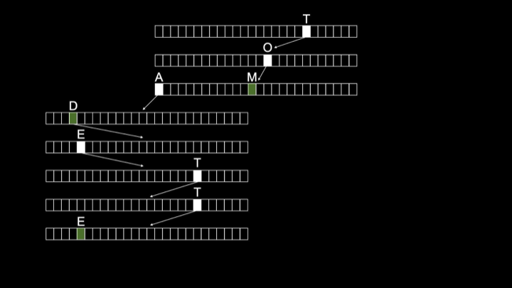
- A hash table can be thought of as an array of 链表, and those 链表 exist for the sole purpose of managing collisions. A collision in a hash table is when two values both hash to the same 地点.
- On the one hand, this is a wonderful solution because it means I can store as many names that start with L as I need. The downside is this is devolving again. Now my hash table is devolving into a linked list based on this design.
- What 关于 in the most perverse case? If I only have friends whose names start with L, my hash table is going to have 26 locations, only one of which I’m using, and it’s just going to be one massive linked list there of all of my friends.
- Even in the 世界 of Nintendo, there might be a lot of these collisions that we can solve by using these chains, these 链表. But my data structure is moving away from a running 时间 akin to constant 时间, \(O(1)\), starting to approach \(O(n)\).
- If we assume a uniform distribution of friends over the English alphabet based on the first letter of their names, each of our 链表 should be maximally n divided by k, where n is the total number of people, and k is 26. But \(O(n/k)\) is really still just \(O(n)\), because if you’ve got lots and lots of values, it doesn’t matter if you divide by 26.
- What if we use a bigger array and look at not just the first letter of someone’s 姓名, but maybe the second and the third? It’s statistically much 较少 likely that we’re going to have two friends whose names start with the same first three letters.
- The trade-off is pretty obvious. To save 时间 and reduce collisions, we’re using a lot 更多 space: 26 times 26 times 26 boxes. And we don’t have friends whose names start with every combination of three letters, so we’re wasting a huge amount of space.
Tries
-
Can we maybe really, literally get constant 时间 access? Let me show you one other data structure called a trie, short for retrieval (even though retrieval isn’t pronounced “retrieval”).
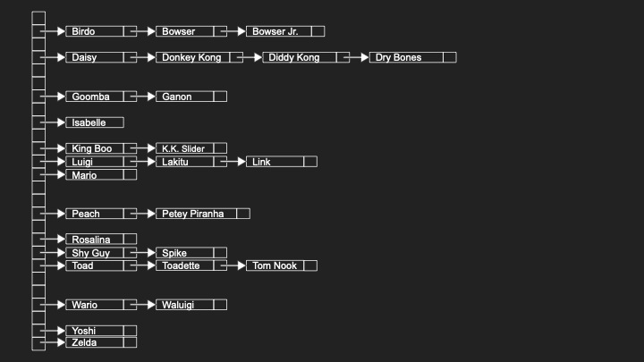
- A trie is another type of tree, but not a 二分搜索 tree. A trie shall be a tree made up of arrays. It seems we have an evolution of 数据结构 here where people just started mashing together different ideas.
- A trie begins with the root node. That root node is technically an array of size 26. And that array’s locations are going to represent the letters in the English alphabet. We’re going to use those locations to implicitly store whether or not someone’s 姓名 is in this data structure.
- For instance, suppose we want to insert the 姓名 “Toad”. We go to the T 地点 at the root, then follow a pointer to another array and go to O, then A, then D. At the end, we indicate with a marker that a 姓名 ends here.
- If we want to insert another friend whose 姓名 is “Toadette”, that’s a superstring of Toad. We just have to indicate that another 姓名 ends at E-T-T-E.
- Notice that we are implicitly storing the names Toad and Toadette simply by having one array for each letter in those names with arrows from the positions that correspond to those letters, leading to the array that represents the 下一页 letter.
- The running 时间 of a trie implemented in this way is said to be constant 时间, \(O(1)\). Notice, and in your mind’s eye imagine there being not three names in this tree, but 30, 300, 3,000, 3 million. It’s going to take a massive amount of space. But how many steps does it take you to find Toad? One, two, three, four. How many steps to find Toadette? One, two, three, four, five, six, seven, eight.
- No matter how many other names and arrays and nodes are in this data structure, it will always take a constant number of steps to find any individual 姓名. And that is independent of the total number of names in the data structure.
- If realistically we assume that there’s some upper bound on the length of a human 姓名 (maybe it’s 10 letters, maybe it’s 20, but it is finite), searching for, inserting into, and deleting from a trie is said to be constant 时间, \(O(1)\).
-
We found our Holy Grail, and it’s not going to devolve into a linked list with really long chains because there’s no notion of collisions anymore. We’ve handled that by having additional markers that keep track implicitly of where a 姓名 ends.
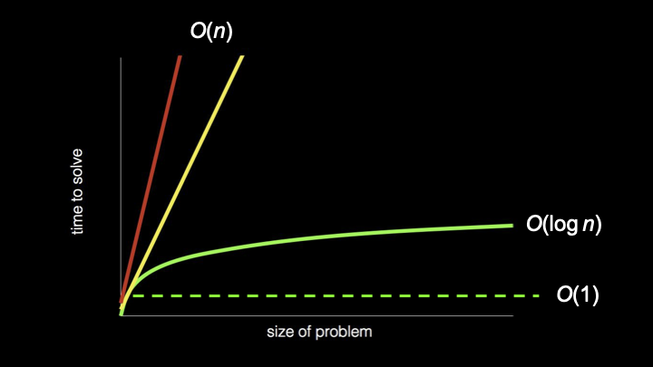
Notice the different shapes: \(O(n)\) as linear lines, \(O(\log n)\) as a gentle curve, and \(O(1)\) as a flat line representing constant 时间. - Do you want to use a trie? Frankly, this is a bit of a head fake: Probably not. They really do tend to use and therefore waste quite a bit of space.
- In practice, it tends to be better to use typically a hash table in some form. Yes, there tend to be collisions in 哈希表, but if you choose a fancier hash function, maybe looking at the first three letters or something 更多 sophisticated, you can statistically reduce the probability of collisions. In general, that tends to be appealing when you’re designing a data structure that at least in the average case performs very well.
Abstract Data Types
- What we focused on thus far are indeed 数据结构: ways to stitch together information in your computer’s 内存 by treating it as an addressable canvas. We looked at arrays, 链表, trees (specifically 二分搜索 trees), 哈希表, and tries.
- But it turns out in the 世界 of computing, there’s also what we call abstract data types, which are 数据结构, but they’re not necessarily specific 数据结构. They’re 更多 ideas, concepts, features that can be implemented with different 数据结构.
- 数据结构 tend to be among your 实现细节. An abstract data type offers you functionality without prescribing how it’s implemented under the hood.
Dictionaries
- A dictionary is a very common abstract data type. By dictionary, we might mean literally words and definitions, be it in English or any other language. But it might also 更多 generally just be something associated with something else.
- Dictionaries are the Swiss army knives of abstract data types in that they let you associate anything with anything else. For instance, a two column table with words on the left and definitions on the right. Or 更多 generally, keys and values where the key is the thing on the left, the value is the thing on the right.
- It might be word and definition, but it might also be a 姓名 and a number, as in a phone book, because if you think 关于 it, a phone book is like a dictionary. But instead of words and definitions, it’s names and numbers or names and emails.
- A dictionary is just a collection of key-value pairs. How can you implement a dictionary in 内存? Well, you could store keys and values using an array, having a really big array from left to right, storing all of your friends’ names and numbers alphabetically. But maybe that’s not the best design if you need to add new entries.
- Okay, so let’s use a linked list. This would allow the dictionary to grow, and this would allow adding or even removing new names and numbers. But 链表 give us linear 时间, not logarithmic.
- So maybe we want to use a 二分搜索 tree, which gives us logarithmic 时间. Can we use a hash table or trie? Even to implement the simplest of ideas, a dictionary, we can use any of today’s 数据结构.
Queues
- A queue is an abstract data type that takes different forms. In IT, there are printer queues, whereby if a bunch of people are trying to send something to the printer at the same 时间, ideally those jobs get queued so that the first person’s job comes out first, the second person’s job comes out second.
- In the real 世界, if you’re lining up at a store, maybe to buy some new product, ideally the store is maintaining a queue, whereby the first person in line gets to buy the product first, and then the second person, then the third. So there’s order and fairness.
- A queue is what you would technically call a FIFO data type: first in, first out. That is a desirable property for a queue, if only for fairness’ sake. Because you’re going to be annoyed if you go to the store and you’re there first, but they call on the person way at the end of the line.
- In the 世界 of queues, there are typically operations. To enqueue means to add something to a queue. Dequeue means to remove something from the queue. When you enqueue something, it goes at the end of the queue. When you dequeue something, you remove it from the front of the queue, thereby maintaining that FIFO property.
- How can you implement a queue in a computer’s 内存? You could use an array and plop the first value here, then here, then here. You just need to make sure that with your corresponding dequeue algorithm, you remove this value first, then this one, then this one, maintaining first in, first out order.
- You could use a linked list. That’s going to give you a lot 更多 dynamism. It really depends what properties you want.
Stacks
- An alternative to queues are stacks, which offer a different property. You see stacks in the real 世界, maybe in a cafeteria where there might be a stack of trays whereby you typically take from the top.
- That would not be a queue. Why? A queue gives you FIFO (first in, first out), and the first tray in, presumably by way of gravity, would be at the bottom. So first out would mean taking somehow the bottommost tray from the stack. That’s not a queue.
- Similarly in the kitchen, if you’ve got a stack of plates on the shelf, you’re probably not in the habit of taking first in, first out (the bottommost plate that you put in first).
- Queues don’t really make sense for those purposes. Those are really better described as stacks, because stacks offer a different property: LIFO, last in, first out.
- Indeed, if you washed a whole bunch of plates, you stack them on top of each other. The last one in is probably going to be the first one out by nature of having pulled it from the top.
- That’s a desirable physical property and a necessary physical property in a lot of cases in the real 世界. Maybe not a desirable property in the computing 世界. In fact, your printer would be a little obnoxious if it maintained a stack instead of a queue of jobs, because it would mean whoever sent their job to the printer most recently would get their printout first. That doesn’t really feel equitable.
- But there are use cases for stacks, including in computing, at a lower level. In terms of terminology for stacks, push is the term of art that describes adding something to the stack, and pop is the process of removing something from the stack, which is generally going to be from the top.
Summing Up
In this lesson, you learned 关于 designing 数据结构, ways to store information inside of the computer’s 内存. Specifically, you learned 关于…
- 内存 as a canvas of addressable bytes that can be used to store data.
- Arrays as blocks of contiguous 内存 that store values 返回 to 返回 to 返回.
- 链表 as collections of nodes that use 指针 to link values stored anywhere in 内存.
- 指针 as addresses that point from one 地点 in 内存 to another.
- 二分搜索 trees that maintain the property that left children are smaller and right children are larger.
- Balanced trees that prevent 二分搜索 trees from devolving into 链表.
- 哈希表 that use hash functions to achieve near-constant 时间 access.
- Collisions in 哈希表 and how to resolve them using chaining.
- Tries as trees of arrays that achieve true constant 时间 access at the cost of space.
- Abstract data types like dictionaries (key-value pairs), queues (FIFO), and stacks (LIFO).
See you 下一页 时间!